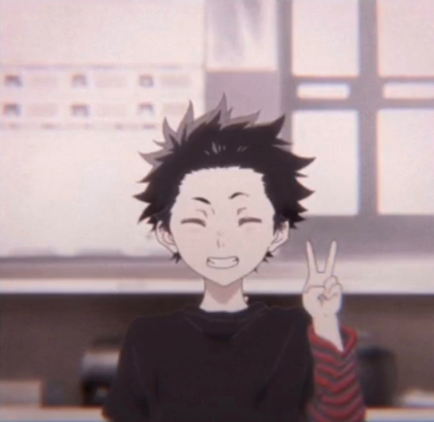
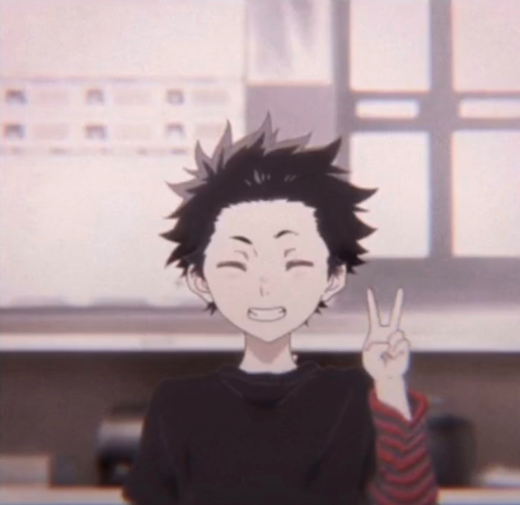
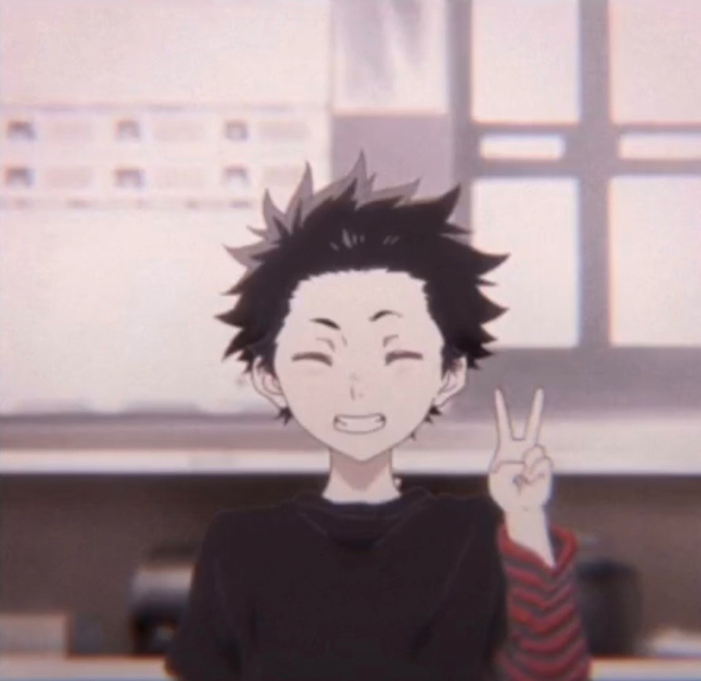
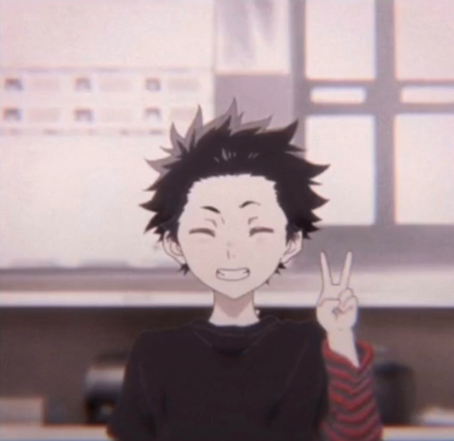

Ишида Шоя (石いし田だ将しょう也や, Ishida Shōya) — протагонист истории «Koe no Katachi», ученик старшей школы и в прошлом известный хулиган и задира, издевавшийся над Нишимией Шоко. Шоя — худощавый молодой человек с зелёными глазами и встопорщенной шевелюрой чёрных волос, хаотично торчащих в разные стороны. В повседневности носит одежду тёмных тонов (к примеру, чёрные футболки), светлые шорты и спортивные кроссовки. В детстве так же ходил и в младшую школу, однако поступив сперва в среднюю, а затем и в старшую, начал носить общую школьную форму, состоящую из пиджака, галстука, брюк, белой рубашки, и ботинок. За опрятностью своего внешнего вида юноша не следит, в результате чего Шоя часто выглядит неряшливо: пиджак помят, а рубашка выбивается из брюк.
Начальная школа
В детстве Ишида был главным хулиганом и сорвиголовой, которого не заботили никакие правила и который главной своей задачей считал борьбу со скукой. Ради этого он вместе с Шимадой и Хиросе постоянно играл в видеоигры, задирал сверстников а также устраивал «испытания на храбрость», ныряя в водоёмы (реки и пруды) с разной высоты. Порча имущества и наставления матери его не волновали: так, в очередной раз вымокнув и испачкав одежду, на следующий день он снова шёл творить всё, что ему вздумается. Даже побои со стороны ребят постарше ему были нипочём: для него избиение старшеклассником было своеобразной «честью». Перевод глухой Нишимии Шоко стал для Шои своеобразным подарком свыше. Увидев в ней идеальный инструмент для борьбы со скукой, он начинает прилюдно задирать её, своими выходками постепенно заходя всё дальше и дальше. В итоге Шоко переводится в другую школу, а сам Ишида становится козлом отпущения для всего класса, свалившего на него всю вину в издевательствах над Нишимией.
Средняя школа
После поступления в среднюю школу бывшие друзья Ишиды, Шимада и Хиросе, сразу распускают слухи о травле, которую Шоя устраивал Шоко. Это приводит к тому, что юноша постепенно закрывается в себе, превратившись в абсолютного интроверта, и становится волком-одиночкой, избегающим контактов с окружающими . Вместе с этим в нём растут сожаления и чувство вины за всё то, что он творил с Нишимией в начальной школе. Помимо этого Шоя также начинает ненавидеть своих одноклассников, считая «позёрами» (например, Каваи Мики за лицемерие, а Машибу Сатоши — за осветление волос, которое ему не идёт.) Такое мировоззрение и одиночество остаются с ним до старшей школы.
Старшая школа
Накапливающийся негатив приводит к тому, что Шоя начинает задумываться о самоубийстве. Он начинает подрабатывать, а также распродаёт всё своё имущество, чтобы вернуть матери сумму, шесть лет назад потраченную ею на возмещение стоимости испорченных по вине Шои слуховых аппаратов Шоко (1 700 000 йен). В самый последний момент он передумывает и решает напоследок встретиться с Нишимией и извиниться перед ней, ради чего до этого изучал язык жестов. Встретившись с девушкой и вернув тетрадь для общения, Ишида вместо извинений предлагает ей стать друзьями. С этого момента его характер начинает меняться в лучшую сторону: его сердце начинает оттаивать, а сам Шоя ставит себе цель возместить Нишимии то счастье, которого он лишил её в начальной школе. Ишида встречает новых друзей и искренне с ними веселится . Однако, несмотря на это, его чувство вины всё ещё даёт о себе знать. В отличие от «прошлого» себя, нынешний Шоя после того, как вспылит и на ком-либо сорвёт злость, первым идёт извиняться, желая вновь наладить контакт.